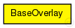
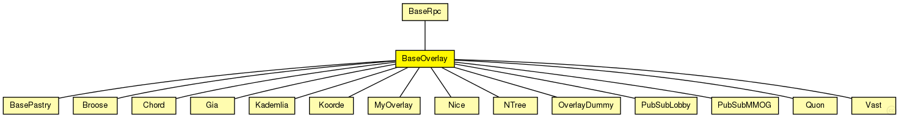

This documentation is released under the Creative Commons license
This documentation is released under the Creative Commons licenseBase class for overlay implementations
Author: Ingmar Baumgart, Bernhard Heep, Stephan Krause, Sebastian Mies
The following diagram shows usage relationships between types. Unresolved types are missing from the diagram. Click here to see the full picture.
The following diagram shows inheritance relationships for this type. Unresolved types are missing from the diagram. Click here to see the full picture.
| BaseRpc (simple module) |
Base module for simple RPC communication |
| BasePastry (simple module) | (no description) |
| Broose (simple module) |
The main module of the Broose implementation |
| Chord (simple module) |
The main module of the Chord implementation |
| Gia (simple module) |
The main module of the GIA implementation Author: Robert Palmer |
| Kademlia (simple module) |
The main module of the Kademlia implementation |
| Koorde (simple module) |
The main module of the Koorde implementation |
| MyOverlay (simple module) | (no description) |
| Nice (simple module) |
The main module of the NICE implementation |
| NTree (simple module) | (no description) |
| OverlayDummy (simple module) | (no description) |
| PubSubLobby (simple module) | (no description) |
| PubSubMMOG (simple module) | (no description) |
| Quon (simple module) | (no description) |
| Vast (simple module) | (no description) |
| Name | Type | Default value | Description |
|---|---|---|---|
| rpcUdpTimeout | double |
default timeout value for direct RPCs |
|
| rpcKeyTimeout | double |
default timeout value for routed RPCs |
|
| optimizeTimeouts | bool |
calculate timeouts from measured RTTs and network coordinates |
|
| rpcExponentialBackoff | bool |
if true, doubles the timeout for every retransmission |
|
| localPort | int |
UDP port for overlay messages |
|
| debugOutput | bool |
enable debug output |
|
| keyLength | int |
overlay key length in bits |
|
| nodeId | string |
optional nodeId as string in hexadecimal notation |
|
| useCommonAPIforward | bool |
enable CommonAPI forward() calls |
|
| drawOverlayTopology | bool |
draw arrow to successor node? |
|
| hopCountMax | int |
maximum number of overlay hops |
|
| recNumRedundantNodes | int |
numRedundantNodes for recursive routing |
|
| joinOnApplicationRequest | bool |
only join the overlay on application request |
|
| collectPerHopDelay | bool |
delay statistics for single hops |
|
| routeMsgAcks | bool |
use RPCs for route messages |
|
| lookupRedundantNodes | int |
number of next hops in each step |
|
| lookupParallelPaths | int |
number of parallel paths |
|
| lookupParallelRpcs | int |
number of nodes to ask in parallel |
|
| lookupVerifySiblings | bool |
true, if siblings need to be authenticated with a ping |
|
| lookupMajoritySiblings | bool |
true, if sibling candidates are selected by a majority decision if using parallel paths |
|
| lookupMerge | bool |
true, if parallel Rpc results should be merged |
|
| lookupFailedNodeRpcs | bool |
communicate failed nodes |
|
| lookupStrictParallelRpcs | bool |
limited the number of concurrent rpcs to parameter parallelRpcs |
|
| lookupUseAllParallelResponses | bool |
merge all parallel responses from earlier steps |
|
| lookupNewRpcOnEveryTimeout | bool |
send a new RPC immediately after an RPC timeouts |
|
| lookupNewRpcOnEveryResponse | bool |
send a new RPC after every response, even if there was no progress |
|
| lookupFinishOnFirstUnchanged | bool |
finish lookup, if the last pending RPC returned without progress |
|
| lookupVisitOnlyOnce | bool |
if true, the same node is never asked twice during a single lookup |
|
| lookupAcceptLateSiblings | bool |
if true, a FindNodeResponse with sibling flag set is always accepted, even if it is from a previous lookup step |
|
| routingType | string |
default routing mode (iterative, semi-recursive,...) |
|
| rejoinOnFailure | bool |
rejoin after loosing connection to the overlay? |
|
| sendRpcResponseToLastHop | bool |
needed by KBR protocols for NAT support |
|
| recordRoute | bool |
record visited hops on route |
|
| dropFindNodeAttack | bool |
if node is malicious, it tries a findNode attack |
|
| isSiblingAttack | bool |
if node is malicious, it tries a isSibling attack |
|
| invalidNodesAttack | bool |
if node is malicious, it tries a invalidNode attack |
|
| dropRouteMessageAttack | bool |
if node is malicious, it drops all received BaseRouteMessages |
|
| measureAuthBlock | bool |
if true, measure the overhead of signatures in rpc messages |
|
| restoreContext | bool |
if true, a node rejoins with its old nodeId and malicious state |
| Name | Value | Description |
|---|---|---|
| class | BaseOverlay | |
| display | i=block/circle |
| Name | Direction | Size | Description |
|---|---|---|---|
| udpIn | input |
gate from the UDP layer |
|
| udpOut | output |
gate to the UDP layer |
|
| tcpIn | input |
gate from the TCP layer |
|
| tcpOut | output |
gate to the TCP layer |
|
| appIn | input |
gate from the application |
|
| appOut | output |
gate to the application |
|
| direct_in | input |
gate for sendDirect |
// // Base class for overlay implementations // // @author Ingmar Baumgart, Bernhard Heep, Stephan Krause, Sebastian Mies // simple BaseOverlay extends BaseRpc { parameters: @class(BaseOverlay); @display("i=block/circle"); int localPort; // UDP port for overlay messages bool debugOutput; // enable debug output int keyLength; // overlay key length in bits string nodeId; // optional nodeId as string in hexadecimal notation bool useCommonAPIforward; // enable CommonAPI forward() calls bool drawOverlayTopology; // draw arrow to successor node? int hopCountMax; // maximum number of overlay hops int recNumRedundantNodes; // numRedundantNodes for recursive routing bool joinOnApplicationRequest; // only join the overlay on application request bool collectPerHopDelay; // delay statistics for single hops bool routeMsgAcks; // use RPCs for route messages int lookupRedundantNodes; // number of next hops in each step int lookupParallelPaths; // number of parallel paths int lookupParallelRpcs; // number of nodes to ask in parallel bool lookupVerifySiblings; //true, if siblings need to be authenticated with a ping bool lookupMajoritySiblings; // true, if sibling candidates are selected by a majority decision if using parallel paths bool lookupMerge; // true, if parallel Rpc results should be merged bool lookupFailedNodeRpcs; // communicate failed nodes bool lookupStrictParallelRpcs; // limited the number of concurrent rpcs to parameter parallelRpcs bool lookupUseAllParallelResponses; // merge all parallel responses from earlier steps bool lookupNewRpcOnEveryTimeout; // send a new RPC immediately after an RPC timeouts bool lookupNewRpcOnEveryResponse; // send a new RPC after every response, even if there was no progress bool lookupFinishOnFirstUnchanged; // finish lookup, if the last pending RPC returned without progress bool lookupVisitOnlyOnce; // if true, the same node is never asked twice during a single lookup bool lookupAcceptLateSiblings; // if true, a FindNodeResponse with sibling flag set is always accepted, even if it is from a previous lookup step string routingType; // default routing mode (iterative, semi-recursive,...) bool rejoinOnFailure; // rejoin after loosing connection to the overlay? bool sendRpcResponseToLastHop; // needed by KBR protocols for NAT support bool recordRoute; // record visited hops on route bool dropFindNodeAttack; // if node is malicious, it tries a findNode attack bool isSiblingAttack; // if node is malicious, it tries a isSibling attack bool invalidNodesAttack; // if node is malicious, it tries a invalidNode attack bool dropRouteMessageAttack; // if node is malicious, it drops all received BaseRouteMessages bool measureAuthBlock; // if true, measure the overhead of signatures in rpc messages bool restoreContext; // if true, a node rejoins with its old nodeId and malicious state gates: input udpIn; // gate from the UDP layer output udpOut; // gate to the UDP layer input tcpIn; // gate from the TCP layer output tcpOut; // gate to the TCP layer input appIn; // gate from the application output appOut; // gate to the application input direct_in; // gate for sendDirect }
This documentation is released under the Creative Commons license